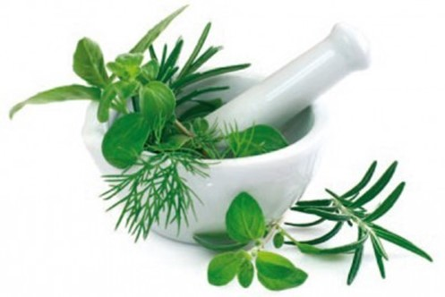
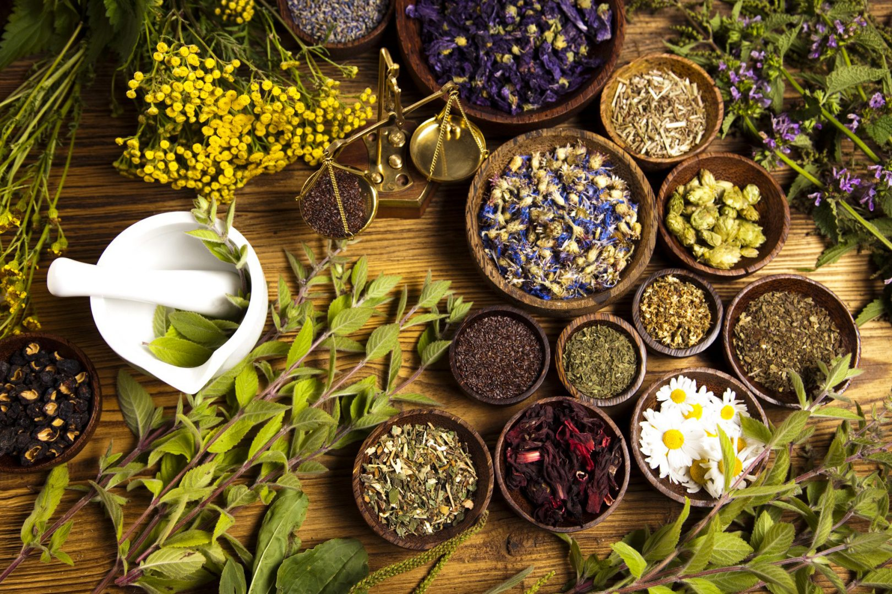

Retirado de: https://www.navegantes.sc.gov.br/ervas-medicinais-remedios-caseiros
Porque usar remédios naturais, ao invés de só tomar remédios?
Podemos dizer que só temos a ganhar quando usamos plantas ou ervas ao nosso favor.
As plantas medicinaisjá vem nos ajudando a muito tempo,
elas são conhecidas por terem um papel fundamental no tratamento e na cura de algumas doenças.
Além disso, tem pessoas que utilizam apenas esse método de tratamento, com remédios naturais.
Onde elas podem agir?
Elas podem estar nos ajudando com o alívio de dores de estômago,
combate aos resfriados e as gripes e estimula os sistema imunológico. Além de auxiliar na ansiedade, no colesterol alto, e também relaxa os musculos e ajuda o corpo e a mente.
Quem nunca escutou de sua avó para tomar um chá antes de dormir?
Pois é, além de auxiliar em tratamentos, nos ajuda no nosso dia a dia.
Mas... são todas as plantas?
Em relação a essa questão, não são todas as plantas que são medicinais e que podem ser usadas como remedios naturais.
Mas a maioria das plantas tem substâncias com ações farmacológicas, como as alcaloides, mucilagens, flavonoides, taninos.
Os alcaloides atuam no sistema nervoso central e podem funcionar como calmantes, as mucilagens funcionam como expectorante, cicatrizante e laxativo.
Agora os flavonoides tem a função de anti-inflamatório, anti-hepatotóxico, e os taninos agem na antimicrobiana e adstringente.
Uso medicinal do Cannabis!
Hoje no Brasil, o uso da maconha não é liberado, apesar que tem alguns países que já liberaram-a.
O cannabis é permitido legalmente apenas como uso medicinal , para pesquisas e o preparo de remédios.
Com isso essa erva já é usada para alguns tratamentos, mas claramente precisa de autorização.
O cannabis é usado no tratamento de epilepsia, cancêr, parkinson, glaucoma, entre outras doenças,
mas lembre-se, de sempre procurar um médico antes de só chegar usando ou ingerindo quaisquer substâncias.
Retirado de: https://www.folhaunica.com.br/artigo-de-opiniao/2022/06/amanda-mattos/uso-do-cannabis-na-medicina/
Um pouco mais sobre os remédios naturais
Remédio Natural é toda substância que é retirada da natureza e que não passa por uma indústria farmacêutica, isso quer dizer que ele é composto apenas por aquela planta.
Como já sabemos plantas ou ervas medicinais são aquelas que apresentam ação farmacológica, ou seja, ajudam na cura ou tratamento de várias doenças.
Além disso, não podemos esquecer de falar sobre o custo desses remedios naturais, falando assim parece que é um grnade absurdo o preço,
mais acaba ficando mais em conta, apesar de ser melhor para a saúde. Normalmente esses remédios vem em cápsulas, um bastante conhecido é o carvão vegetal,
entre outros. Além dos remédios em cápsulas, temos uma grande variedade de chás, que entram nesse caminho de remédio natural.
Veja a lista abaixo.
Alguns chás que nos ajudam no dia a dia
Chá de Boldo
O chá de boldo é bastante famoso, ele é utilizado em vários casos que vai de dor no estômago,
antioxidante, ele ajuda em náuseas, dores de cabeça e alivia ressaca.
Chá de Hibisco
O chá de Híbisco é bem conhecido também, uma curiosidade dele é que pode bebe-lo quente ou frio, isso vai da sua preferência, além disso não contém calorias.
Ele é muito bom para quem quer perder peso, por conta de não ser um chá calorico. Apesar de ser um chá benefíco, não é recomendado para mulheres gestantes,
pois pode alterar o equilíbrio dos hormônios.
Continue a leitura
Chá de Hortelã
O chá de Hortelã é uma erva rica em flavonoides, que protegem os vazos sanguíneos.
Além disso tem minerais e nutrientes, que é ótimo para tratar da cólica, dores de cabeça e a gripe.
Chá de Cravo da índia e gengibre
O chá de Cravo é ótimo para quem quer ter uma pele limpa e bem cuidada, esse chá é bastante recomendado,
além de seus benefícios incluem o fortalecimento do sistema imunológico, a prevenção da degeneração macular, o bom funcionamento do sistema digestivo e alívio de náuseas.
Agora chá de Cravo da índia com gengibre é bom para a inflamação na garganta e dentes.
Juntos eles são antisséptico, anti-inflamatório, analgésico e cicatrizante.
Chá de Erva-doce
O chá de Erva doce é um chá anti-inflamatório, ele também tem alguns suplementos que são essenciais para o nosso organismo,
como a Vitamina C, o potássio e a Vitamina A. Com isso, o chá é recomendado para fortalecer a imunidade, combater dores e sintomas de gripe,
diminuir cólicas menstruais e auxiliar no fluxo digestivo.
Chá de Agrião
A planta do agrião é bastante recomendada para pessoas que tem problemas respiratórios,
como bronquites crônicas, pois ajuda a limpar as vias respiratórias, o agrião é um poderoso diurético e anti-inflamatório,
que pode ser usado para tratar eczemas, acnes, gengivites, aftas, tosse e melhora a digestão.
Chá de Macela
O chá de Macela é analgésico, anti-inflamatório e é composto por calmantes, que ajudam a aliviar os sintomas de estresse, da ansiedade
e a insônia. O chá também pode atuar no tratamento de azia, cálculo biliar, cólicas intestinais, dor de cabeça, problemas gástricos e resfriados.
Chá de Camomila
O chá de Camomila é indicado para reduzir a ansiedade, a flatulências, as náuseas, as dores no estômago, as dores de cabeça. Também fortalece o sistema cardiovascular.
Chá de Erva-cidreira ou Melissa
O chá de Melissa tem sua propriedade como, calmante, sedativa, relaxante, antiespasmódica, analgésica, anti-inflamatórias e antioxidantes,
sendo bastante usada para tratar problemas de saúde, como problemas digestivos, de ansiedade e de estresse. Esta planta medicinal pode ser consumida na forma de chás,
infusões, sucos, sobremesas ou na forma de cápsulas ou extrato natural.

Retirada de: https://blog.plantei.com.br/21-plantas-medicinais-para-ter-em-sua-casa/